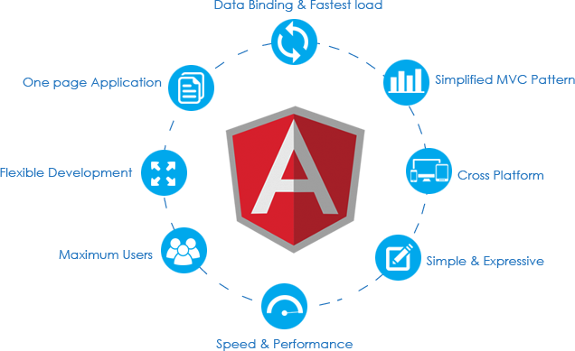
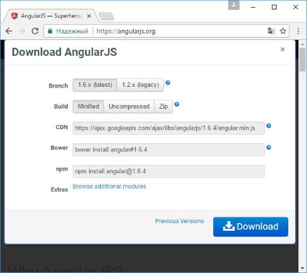
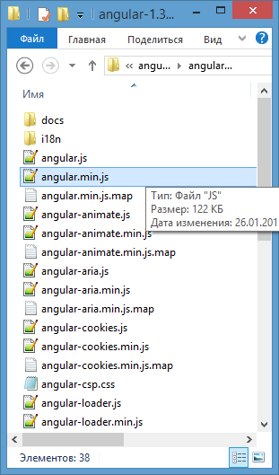

AngularJs это Javascript Framework, созданный для построения динамических веб приложений (dynamic web app), обычно используется для создания одностраничного приложения (Single Page Application - SPA). И работает на основании расширения атрибутов (attribute) для тегов у HTML (Атрибуты следуют правилам Angular). AngularJS это бесплатная платформа, которая предпочитается для использования тысячами программистами во всем мире.
История AngularJS
AngularJS был разработан с 2009 года с помощью Misko Hevery и его другом Adam Abrons. Он считался только отдельным проектом (Side project) помимо их главной работы. После этого Misko Hevery принял участия в проект под названием Google Feedback (Отзыв Google) как програмиист с неполным рабочим днем. Misko Hevery и 2 других программиста написали 17.000 строк кода для проекта Google Feedback в течении 6 месяцев. Количество кода увеличивалось с каждым днем и Misko Hevery понял, что стало сложнее исправлять и контролировать вознакающие ошибки. Поэтому Misko Hevery поспорил со своим менеджером, что он сможет переписать все коды для Google Feedback используя свой проект GetAngular за 2 недели. Hevery проиграл, вместо 2 недель ему потребовалось 3 недели для завершения работы, но коды проекта уменьшились с 17.000 до 1.500 строк. Благодаря успеху Hevery, его менеджер Brad Green заметил и начал развивать AngularJS. AngularJS на самом деле ускорился в течении того времени.

Кто стоит позади AngularJS?
Один из начальных создателей Adam Abrons перестал работать над AngularJS, но Misko Hevery и его менеджер Brad Green превратили начальный проект GetAngular в новый проект, назвали его AngularJS и построили группу для его поддержки в Google. Одна из первых больших побед AngularJS в Google произошла, когда компания DoubleClick была перекуплена Google и они начали переписывать часть их приложения с помощью AngularJS. Благодаря первоначальному успеху DoubleClick, Google словано начал инвестировать больше ресурсов в AngularJS и разрешил AngularJS быть использованным как внутри, так и снаружи. Из-за этого, команда Angular внутри Google быстро развивалась.
Начало работы c AngularJS
Что же представляет собой AngularJS? Для того чтобы нам потребуется файлы самого фреймворка, поэтому нужно загрузить саму библиотеку(https://angularjs.org):

При загрузке zip-пакета мы найдем в нем кроме самой библиотеки (angular.js) еще ряд дополнительных файлов и их минимизированные версии:

angular-touch.js: предоставляет поддержку событий сенсорного экрана
angular-aria.js: предоставляет поддержку aria-атрибутов (accesible rich internet application)
angular-mocks.js: предоставляет mock-объекты для юнит-тестирования
angular-route.js: обеспечивает механизм маршрутизации
angular-sanitize.js: предоставляет функционал для управления потенциально опасным контентом (javascript, html)
angular-cookies.js: обеспечивает функционал для управления куками
angular-loader.js: используется для загрузки angularjs-скриптов
angular-messages.js: предоставляет функционал для вывода сообщений
angular-resource.js: обеспечивает функциональность для работы с ресурсами
Папка i18n: содержит js-файлы для разных локалей
Из всех загруженных скриптов в архиве нас будет интересовать прежде всего файл angular.min.js. Теперь собственно можно создать приложение. Оно будет стандартным HelloWorld. Код html-страницы будет следующим:
Вместо заключения
Однозначно, AngularJS получился качественным и интересным решением, которое стоит применять в своих проектах. Компания Google вновь смогла удивить нас релизом хорошо продуманного продукта. Нельзя сказать, что он получился идеальным, но с возложенными на него задачами ему справиться под силу, а это самое главное. На этом спешу откланяться и пожелать тебе взглянуть на мир JS-разработки иначе.